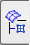
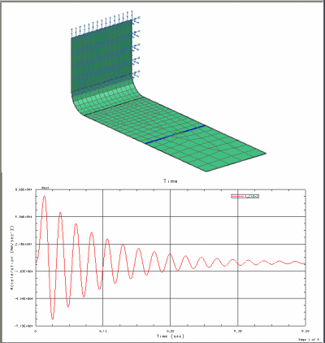

Divide the display into two viewports
Next you will evaluate the response of the entire model at specific time points of maximum and minimum acceleration. In preparation for this task, you will divide your NX graphics window into two viewports and then plot your nodal response function in one of the viewports.
|
Results |
Upper and Lower (Layout group)
 Simulation Navigator
-
Expand the Response Functions node (under the event node)
-

 1_(1Z+)
1_(1Z+)
-
 Plot(XY)
Plot(XY) -
the bottom viewport in the graphics window
